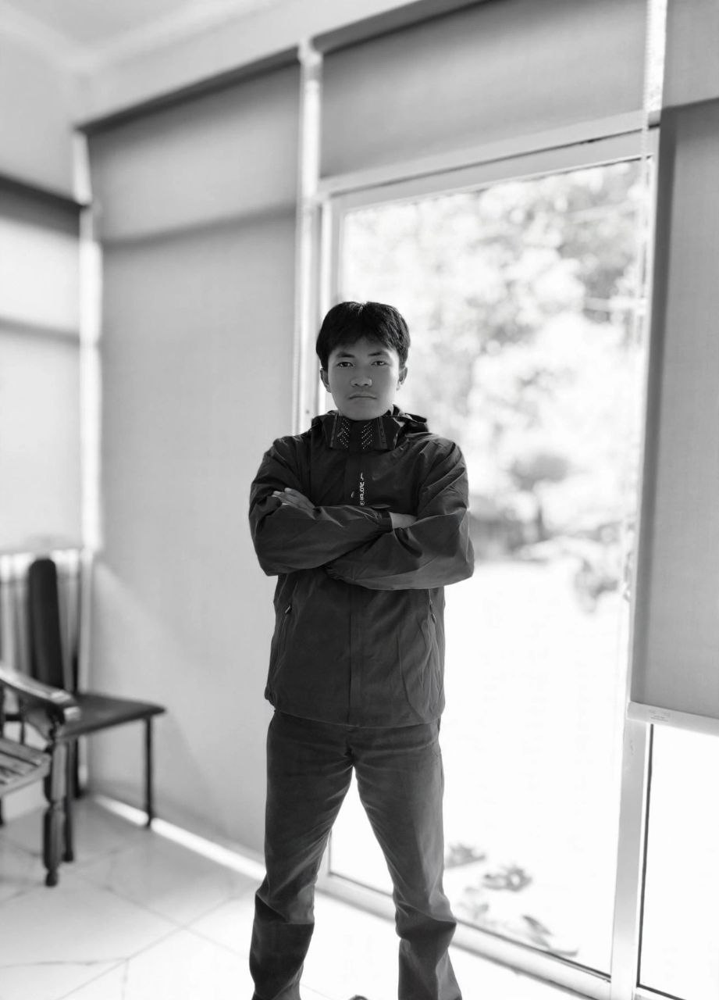

Sayang / 01
Beberapa hal
yang saya suka
ada di sini.
Mencintai dia yang tidak MENCINTAIKU adalah luka yang ku ciptakan sendiri :(
385DESK NOTES
GULIR BUAT LIHAT ↓
CANDRA / 2026LOW KEY
HIGH RGB
HIGH RGB
pc buildfoto✦setup diarystiker favorit✦pc buildfoto✦setup diarystiker favorit✦
01 — PILIH SATU
Jelajahi isinya.
CAN
 01 / BUILD LOGPC SETUPSatu build,
01 / BUILD LOGPC SETUPSatu build,dua suasana.Masuk ke galeri rakitan ↗
 02 / STICKER WALLMOODBOARDMood hari ini?Pilih satu stiker ↗
02 / STICKER WALLMOODBOARDMood hari ini?Pilih satu stiker ↗